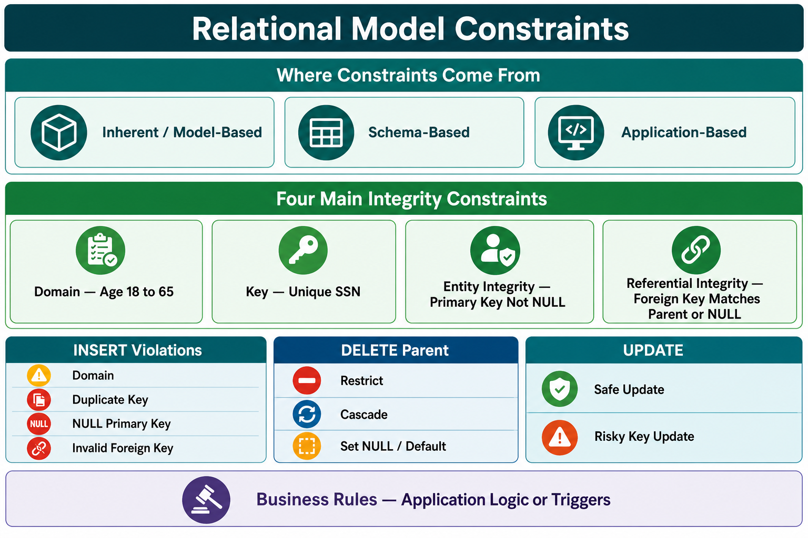

1. Meaning and Sources
Relational model constraints are rules on database structure and data that enforce schema requirements, logical consistency, integrity and reliability.
Inherent / Model-Based
Implied by the relational model itself—for example, a relation cannot contain duplicate tuples.
Schema-Based
Explicitly declared in the schema and enforced by the DBMS.
Application-Based
Complex business rules enforced through application logic or triggers when the schema cannot express them easily.

2. Domain Constraint
Every attribute must contain values from its predefined domain—the allowed type, format or range.
Age INTEGER CHECK (Age BETWEEN 18 AND 65)
Age 17, Age 70 or non-integer text is rejected, preventing inaccurate or out-of-range values.
3. Key Constraint
Keys ensure that every tuple can be uniquely identified.
| Key | Meaning |
|---|---|
| Superkey | Any attribute set that uniquely identifies a tuple. |
| Candidate Key | A minimal superkey; removing any attribute destroys uniqueness. |
| Primary Key | The candidate key chosen as the table’s main identifier. |
STUDENT example: SSN is the primary key, so students such as Dick Davidson, Barbara Benson and Rohan Panchal must have different SSNs. Without a key, duplicate records become ambiguous.
4. Entity Integrity Constraint
A relation’s primary key must never be NULL, because a missing identifier makes a tuple impossible to identify.
Examples: CUSTOMER.Customer_ID = NULL is rejected. In banking, Account_ID cannot be NULL because other records could not reliably refer to that account.
Difference: Key constraint enforces uniqueness; entity integrity specifically enforces a non-NULL primary key.
5. Referential Integrity Constraint
A foreign key must either match an existing parent key or be NULL when NULL is permitted. This keeps relationships between tables consistent.
| DEPARTMENT parent | Valid EMPLOYEE reference |
|---|---|
| Research — Dnumber 5 | John Smith — Dno 5 |
| Administration — Dnumber 4 | Alicia Zelaya — Dno 4 |
| Headquarters — Dnumber 1 | James Borg — Dno 1 |
The EMPLOYEE relation may contain Fname, Minit, Lname, SSN, Bdate, Address, Sex, Salary, Super_ssn and Dno. Dno is a foreign key referencing DEPARTMENT.Dnumber.
- Valid: Dno = 4 because department 4 exists.
- Violation: Dno = 99 because no department 99 exists.
This parent–child rule also matters when a referenced department is deleted.
6. Handling Constraint Violations
Insertion
| Violation | Example |
|---|---|
| Domain | Text inserted into integer Age |
| Key | Duplicate STUDENT.SSN |
| Entity integrity | NULL primary key |
| Referential integrity | EMPLOYEE.Dno has no matching DEPARTMENT.Dnumber |
Deleting a Referenced Parent
- RESTRICT: prevent deletion while child rows reference the parent.
- CASCADE: automatically delete dependent child rows.
- SET NULL / DEFAULT: replace child foreign keys with NULL or a defined default.
Updating
Changing a primary key behaves like deleting the old identity and inserting a new one, so it may break keys or references.
- Safe update: changing employee salary; keys remain unchanged.
- Risky update: changing EMPLOYEE.SSN to an already existing SSN; primary-key violation.
7. Application-Based Business Rules
Some rules are difficult to express directly in a schema and are enforced through application logic or triggers:
- An employee’s salary must not exceed the supervisor’s salary.
- An employee’s total weekly working hours must not exceed 56.
8. IBPS SO Quick Revision
- Three sources: inherent, schema-based and application-based.
- Four main types: domain, key, entity integrity and referential integrity.
- Domain checks allowed type/range/format.
- Superkey is unique; candidate key is minimal; primary key is selected.
- Entity integrity: primary key cannot be NULL.
- Referential integrity: foreign key matches parent key or is permitted NULL.
- Parent deletion actions: RESTRICT, CASCADE, SET NULL or SET DEFAULT.
- Primary-key updates are risky because dependent references may break.
- Complex business rules use application logic or triggers.
Most likely questions: Age range—domain. Minimal superkey—candidate key. NULL primary key—entity integrity. Dno 99 without department—referential integrity. Delete child rows automatically—CASCADE.